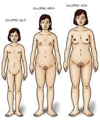
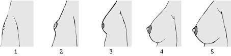
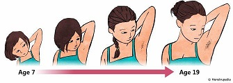
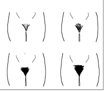

ጉርምስና
ጉርምስና ምንድን ነው?
ጉርምስና ማለት ሴትም ሆነ ወንድ ለግንኙነት ብቁ የሚሆኑበት ወቅት ነው። ጉርምስና የሚከሰተው አብዛኛውን ጊዜ ከ 10 እስከ 14 የእድሜ ክልል ዉስጥ በሚገኙ ልጆች ላይ ነው። ጉርምስና በሚያስከትለው አካላዊና ስሜታዊ ለውጦች ይገለጻል ።

በጉርምስና ጊዜ በሴቶች ላይ የሚከሰቱ አካላዊ ለውጦች
የጡት ማጎጥጎጥ ወይንም የጡት እድገት ጉርምስና ሴቶች ላይ ከሚያስከትላቸው አካላዊ ለውጦች መካከል አንዱ ሲሆን ከ 8 አመት እስከ 13 አመት ባለ የእድሜ ክልል ውስጥ እድገቱን ይጀምራል። የሚከሰትበት እድሜና የእድገት ፍጥነቱ እንደ ሰው የተለያየ ነው። ይህም ማለት አንዲት ሴት በ8 አመቷ የጡት እድገት ማስተዋል ልትጀምር ትችላለች የድሜ እኩዮቿ ግን ምንም አይነት የጡት እድገት ላያስተውሉ ይችላሉ። ስለዚህ ይህቺ እንስት ከእነሱ ቀድማ የጡት እድገት ማየቷ እንደ ችግር ሊታይ አይገባውም በተቃራኒው በ13 አመቷ የጡት እድገት የጀመረች እንስት እንዲሁ እንደ ችግር ልናየው አይገባም ይህ የሚያሳየን የጡት እድገት የሚጀምርበት ጊዜ እንደሰው እንደሚለያይ ነው።
ብዙውን ጊዜ ጡት ማጎጥጎጥ የጀመሩ እንስቶች ምቾት አይሰማቸውም ። እንደውም በብዛት ሰው እንዳያይባቸው ለመደበቅ ሲሞክሩ ይስተዋላሉ። ይሁን እንጅ ይህ የተፈጥሮ ጸጋ በመሆኑ ማነኛዋም እንስት ልትሸማቀቅበት አይገባም። እንዴያውም የሴቷን እድገት የሚያሳይ ስልሆነ አንገታችንን ቀና አድርገን ልንኮራበት ይገባል።
ጡት ማስያዣ መቼ እንጠቀም?
ጡት ማጎጥጎጥ የጀመረች ልጃገረድ እንቅስቃሴ በምታደርግበት እንዲሁም ከእድሜ እኩዮቿ ጋር በምትጫወትበት ጊዜ ምቾት ሊነሳት እና ህመም ሊሰማት ይችላል። ስለዚህ በዚህ ጊዜ ጡት ማስያዣ መጠቀም ጥሩ አማራጭ ነው። ምክንያቱም ጡቷን ደግፎ በመያዝ በእንቅስቃሴ ወቅት ህመም እንዳይኖር እና ምቾት እንዲሰማት ያደርጋል።
ምን አይነት የጡት ማስያዣ ልጠቀም ለሚለው ጥያቄ እንደሰው ምርጫ ቢሆንም ትልቅ ትኩረት የሚገባው ነገር ግን ትክክለኛ የሆነ ጡት ማስያዣ ልኬት መጠቀም ነው።
እንዴት ትክክለኛ የጡት ማስያዣ ልኬታችንን ማወቅ እንችላለን?
ለመጀመሪያ ጊዜ ጡት ማስያዣ ለመግዛት የሚያስቡ ሴቶች ጋር የሚነሳው ጥያቄ እንዴት ትክክለኛውን የጡት ማስያዣ ልኬት ማወቅ እንችላለን የሚል ነው ። በመሆኑም የጡት ማስይዣ መሸጫ ላይ የሚሰሩ ባለሞያዎችን በማማከር ልኬታችንን ማወቅ እንችላለን።ይሁን እንጅ አብዛኞቻችን በሌላ ሰው የመለካት ነገር ትንሽ ቢሆን ምቾታችንን ሊነሳን ይችላል። ስለዚህ እንዴት በቤት ውስጥ ሜትርን በመጠቀም ልኬታችን ማወቅ እንደምንችል እንመለከታለን።
በመጀምሪያ ጡት ማስይዣልኬታችን ለማወቅ ሁለት ነገሮች እንጠቀማለን።
የደረት ልኬት (ከጡታችን በታች ያለውን)
የጡታችን ልኬት
የደረታችንን ልኬት ለማወቅ ሜትራችንን ወይንም የልኬት መሳሪያችንን ከጡታችን ዝቅ ብሌን ወይንም ሌላ ጊዜ ጡት ማስይዣ ስናርረግ የሚያልቅበት ቦታ ላይ ሜትራችንን በማድረግ የደረታችን ዙሪያ እንለካለን። በምንለካበት ጊዜ መለከያችንን በጣም ማጥበቅም ሆነ ማላላት አይስፈልገንም። ከዚያም ያገኘነውን ልኬት ወረቀት ላይ እንመዘግባለን ። በመቀጠል ሜትራችንን በምጠቀም ጡታችን ላይ በማድርረግ ወገባችን ጨምሮ ሙሉ የጡታችን ዙሪያ እንለካለን። አሁንም ስንለካ ማጥበቅም ሆነ ማላላት የለብንም ከዚያ ልኬታችን እንመዘግባለን። አሁን በመቀጠል የምጀምሪያ ልኬታችን እናያለን ያገኘነው ውጤት ለሁለት የሚካፈል ማለትም 32፣ 34 ፣ 36...ወ.ዘ.ተ. እነዚህን የመሰሉ ከሆነ ባገኘነው ውጤት ላይ ሁለት ልኬት እንጨምራለን። ለምሳሌ ልኬታችን 34 ኢንች ከነበረ 36 ኢንች ይሆናል። ያገኘነው ውጤት ለሁለት የማይካፈል ከሆነ ለምሳሌ 33፣35፣37 ወ.ዘ.ተ. ተጨማሪ ሶስት ኢንች እንጨምራለን። ይህም ማለት 33 ከነበር 36 ይሆናል ማለት ነው። ሁለተኛ ካገኘነው ልኬት ላይ አሁን ያገኘነውን የደረት ልኬት እንቀንሳለን። ምሳሌ ሁለተኛ ያገኘነው የጡታችን ዙሪየአ ልኬት 39 ኢንች ቢሆን የደረት ልኬታችን ደግሞ 36 ቢሆን 39-36 = 3ኢንች ሆነ። አሁን የጡታችን ልኬት እናገኛለን ማለት ነው። ብዙ ጊዜ የደረት ልኬት የሚገለጸው በቁጥር ሲሆን (32፣34፣36...)ጡት መጠን ልኬት በፊደል ይወከላል(AA,A,B,C,D,DD)። ከላይ ያለውን ምሳሌ ተጠቀመን 3 ኢንች ምን ማለት እንደሆነ እናያለን። ከጡታችን ልኬት ላይ የደረታችን ልኬት ስንቀንስ ያገኘነው ውጠትከአንድ ኢንች ካነሰ AA
አንድ ኢንች ከሆነ A
ሁለት ኢንች ከሆነ B
ሶስት ኢንች ከሆነ C
አራት ኢንች ከሆነ D
ስለዚህ ከላይ ባየነው ምሳለ መሰረት የ እንስቱዋ የጡት ማስያዥያ ልክት 36 ሲ ይሆናል ማለት ነው ። ስለዚህ በቀላሉ ወደ ጡት ማስያዥያ መደብር በመሄድ ትክክለኛውን ልኬትዋን ማግኘት ትችላለች ማለት ነው ።

በጉርምስና የእድሜ ክልል ላይ የምትገኝ ማንኛዋም እንስት በብልት እና በብብት ላይ የጸጉር እድገት ታስተውላለች።
ይህም እሱዋ ላይ ብቻ እንዳልሆነ ማወቅ እና ጉርምስና ከሚይስከተላቸው ለውጦች መካከል አንዱ እንደሆነ መረዳት ይስፈለጋል። ይህን ለውጥ በምንናይበት ጊዜ ምንም አይነት መደናገጥ ሆነ ግራ መጋባት አያስፈለገም ። በዚህ ዙሪያ ብዙ ጊዜ የሚነሳው ጥያቄ እዚህ አከባቢ የሚገኙትን ጸጉሮች መላችጨት በተመለከተ በህከምና ሳይንስ የተቀመተ አስገዳጅ ምክኒያት አለው ወይ ሚል ሲሆን ምንም አይነት አስገዳጅ ምክኒያት የለውም። የሁን እንጂ ሁሉም ሰው የሚላጭበት የይራሱ የሆነ መክኒያት ይኖረዋል።ስለዚህ ጸጉር አስተውለን ከመላጨታችን በፊት ከወላጆቻችን ጋር ወይንም ከታላላቆቻችን ጋር ምውራቱ የመከርል። ለመላጬት ከወሰንን ደሞ የምነላጭበት መሳሪያ ከዚህ በፊት ሌላ ሰው ያልተጠቀመበት መሆን አለበት ። እንዲሁም ከተጠቀምንበት በሁዋላ መጣል እና ለድጋሚው ሌላ አዲስ መሳሪያ መጠቀም ። በምንላጭበት ጊዜ እራሳችንን እንዳንቆርጥ ጥንቃቄ ማድረግ እንዳንረሳ።


በጉርምስና ወቅት በሰውነታችን ውስጥ በሚመረተው ሆርሞን አማካኝነት የወዝ አመንጪ እጢ ከመጠን በላይ ወዝ ያመነጫል ። ይህ ክስተት ለ ብጉር መፈጠር እንደምክኒያት ይወሰዳል ። ብጉር በአብዛኛው ፊታቸን ላይ ግንባራችን አከባቢ፣ደረታችን ላይ፣ጀርባችን ላይ ልናስተውል እንችላልን። በቆዳችን ላይ ብጉር በምናይበት ጊዜ በእጃችን መነካካት እንዲሁም ብጉሩን ማፍረጥ በሰውነታችን ላይ ጠባሳ እንዲፈጠር ስለሚያደርግ ከመነካካት መቆጠብ የኖርበናል።
ተጨማሪ ነጥቦች
ብዙ ፍራፍሬ እንዲሁም በብዛት ወሃ መጠጣት ብጉር እንዲቀንስ ያረጋል
ሁለት ማንኪያ የ ቀረፋ ዱቄት እና አንድ ማንኪያ ማር በማዋሃድ ፊታችንን መቀባት እና ከ 10 እስከ 15 ደቂቃ ማቆየት ከዛም መታጠብ። ይህን ውህድ መጠቀም ብጉር እንዲቀንስ ያረጋል
እሬት ማግኘት ከቻልን እሬቱን መሃል ለመሃል በመሰንጠቅ ከውስጡ የመናገኘውን ዝልግልዝ ፈሳሽ በማንኪያ በመውሰድ ፊታችንን መቀባት ከ አንድ ከ 20 ደቂቅ በሁዋል በ ንጹህ ውሃ መታጠብ ።
በጉርን ለመቀነስ ጣፋች ምግቦችን መቀነስም የመከራል።
በጉርምሰና የእድሜ ክልል ላይ ያሉ እንስቶች በሰውነታቸው ላይ የቅርጽ ለውጥ ያስተውላሉ ። ይሀም ለውጥ የሚስተዋልው በ ዳሌዋ እና በመቀመጫዋ አከባቢ የ ስብ መጠን ስለሚጨምር ሰፋ ያል ቅርጽ እንዲኖራት ያደርጋል።
በጉርምስና ወቅት ሰውነታችን በብዙ ለውጥ ውስጥ ስለሚሆን ምቾት ላይሰማን ይችላል። በዚህም የተነሳ በነገሮች ላይ ከመጠን በላይ የሆነ ስሜታዊነት ይታየብናል። በአካላዊ ለውጦቻችን ላይ አብዝተን መጨነቅ፣ቶሎ መበሳጨት፣ከቤተስቦቻችን ጋር ለመግባባት መቸገር እና የመሳሰሉት አይነት ሰሜቶችን አብዘተን እራሳችን ላይ ልናስተውል እንችላለን ። ይህ በሚሆንበት ጊዜ እርሳችንን በማረጋጋት እንዲሁም ከወላጆቻችን ጋር ወይንም በ እድሜ ከ እኛ ከሚበልጡ ሰዎችጋር በመወያየት ምከር መጠየቅ ይኖርብናል ።
በጉርምስና ጊዜ አብዛኞቻችን ላይ የስሜት መለዋወጥ እናስተውላለን ። አንዳንድ ጊዜ የራስ መተማመናችን በጣም ከፍ ይልና ከኔ በላይ ማንም አዋቂ የለም፣ እኔ ያልኩት ሁሉ ልክ ነው የሚል አመለካከት ይኖረንል። በሌላ ጊዜ እራሳችንን ደስተኛ ሆነን እናገኛለን ከዚያ ወዲያው ብስጩ መሆን፣ደብርት ውስጥ መግባት እና ቤተሰቦቻችን ለኛ እንደማያስቡ እና ትኩረት እንደማይሰጡን ሊሰማን ይችላል። እነዚህን እና የመሰሉ ስሜቶች ቶሎቶሎ እየተለዋወጡ ሲመላለሱ እናስተውላለን። እንደምክኒያትነት የሚነሳው በ ሰውነታችን ወስጥ ያለው የሆርሞን ለውጥ ነው ። በእዚህ ጊዜ በእርጋታ ቤተሰቦቻችንን መስማት ከአደጋ ይጠብቀናል።
በጉርምስና እድሜአችን ላይ ብዙውን ጊዜአችንን የምናሳልፈው ከ እድሜ እኩዮቻችን ጋር ነው። አብረን በምንሆንበት ጊዜ ብዙ የ ሃሳብ ልውውቶች እናደርጋለን። በ እነዚህ የሃሳብ ልውውጥም ሆነ በድርጊታችው እኛ ላይ አሉታዊም ሆነ አዎንታዊ ተጸኖዎች ያሳድሩበናል። አንዳንድ ጊዜ ጉዋደኞቻችንን ለመምሰል በምናረገው ጥረት ውስጥ የራሳችንን ማንነት እናጣለን። በዚህም ግፊት የተነሳ ብዙዎቻችን አላስፈላጊ እንዲሁም ጉዳት የሚያስከተሉ ነገሮች ውስጥ እንዘፈቃለን። ለምሳሌ ያክል የተለያዩ ሱሶች መጠቀም፣ ከትምህርት ገበታ ላይ አለመገኘት ፣ወሲባዊ ጉዳዮች ላይ መሳተፍ እና የመሳሰሉት። እነዚህ ተግባራት በከፍተኛ ሁኔታ እኛን አደጋ ላይ የሚጥለን በመሆኑ አሉታዊ ጉዳዮቹን ወደጎን ትተን አዎንታዊዎቹን ለይተን ለመቅበል መሞከር እንዲሁም ከቤተሰቦቻችን ጋር ወይንም በእድሜ ከእኛ ከሚበልጡ ሰዎች ጋር ስለ ጉዳዩ በስፋት መወያየት ይኖርብናል ማለት ነው።
የጉርምስና የእድሜ ክልል የግብረስጋ ግንኙነት ፍላጎት የሚጀምርበት እድሜ ስለሆነ በዚህ ወቅት በተደጋጋሚ ስለ ግብረስጋ ግንኙነት ማሰብ፣ ስለሱ ሚተርክ መፅሐፍቶችን ማንበብ እንዲሁም ፊልሞችን ማየት እናዘወትራለን ። ይህን በምናደርግበት ሰአት እራሳችንን ልንወቅስ አይገባም ምክኒያቱም በማንኛውም የጉርምስና እድሜ ክልል ውስጥ ባለን ሴቶች ላይ ሁሉ ሊከሰት የሚችል ነገር ነው ።በዚህም ጊዜ ከወላጅ ጋር ወይንም ለማውራት ምቾት ከሚሰማን ግን በእድሜ ከሚበልጠን ሰው ጋር ስለ ጉዳዩ በማውራት ጠቃሚ ምክሮችን ብንወስድ ይመከራል።